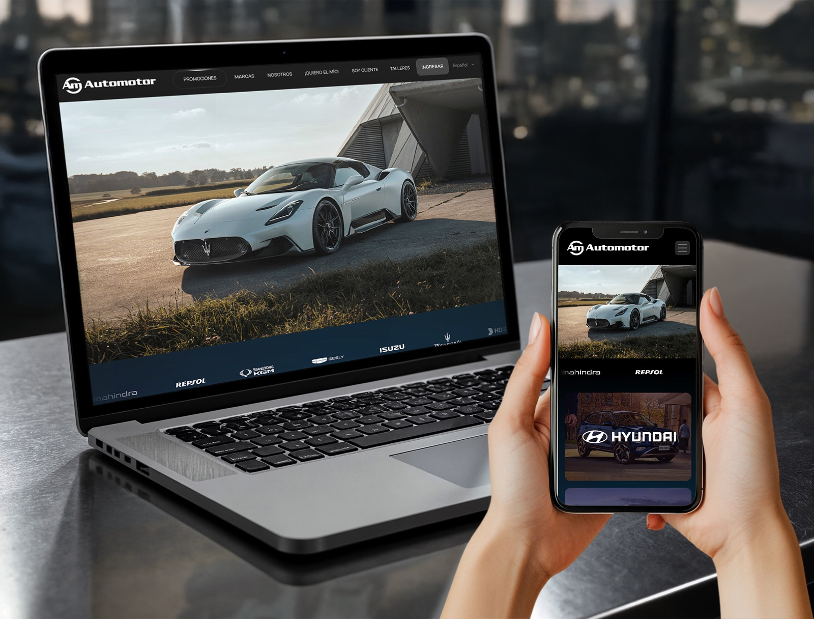

Automotor
Paraguay’s multi-brand vehicle group: nine brands, plus showrooms, parts counters and workshops in four cities. I inherited a full-screen brand carousel with no menu. There was no route to booking a service and no way to find a branch, because the site was organized around the company, not around why anyone was visiting.
The decision I’d defend: I named the navigation by intent (“¡Quiero el mío!”, “Soy cliente”, “Talleres”) and kept the two logins separate, so nobody has to identify themselves before the site can help them.
Outcome
Booking a service and finding a branch now have their own routes. The group has kept me on since 2024 and added three more of its companies.
My role: sole designer, from research and IA through UI, the branch page system and the Framer build
Live: automotor.com.py ↗